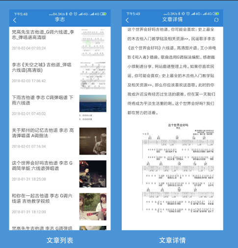
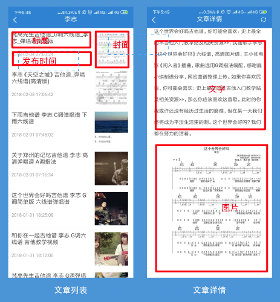

结束连续几天的加班,最近的项目终于告一段落,今天抽点时间开始继续写我这篇拖了很久的《用weexplus从0到1写一个app》系列文章。写这篇文章的时候,weexplus的作者已经把weexplus重构了一下，可以同时打包出web端和native端，我这边的ui界面和项目结构也跟着做了一点变化。这里有weexplus官方放出的一个电影APP的demo，有需要的可以去下载看看，然后顺便给weexplus一个star吧！
文章可能会很长，在此分几篇文章来写，先占个坑：
在第一篇的文章《环境搭建和首页编写》中已经写好了首页的代码,现在要从首页的某个文章跳转到文章详情应该怎么做呢?在vue里我们知道是用vue-router来跳转,weexplus中也给我们封装好了类似的导航控制器navigator。具体使用请看navigtor模块文档
主要用后面这段navigator.pushParam('跳转路径String','传递的参数Object')，如果不需要传参数直接用navigator.push('跳转路径String')就好了。以下为示例代码：
//commponet/home/news.vue省略n多代码
const navigator = weex.requireModule("navigator");//先引入navigator模块
gotonews(item) {
if (item.category) {
if (item.category.name == "专题") {
//navigator传参数跳转页面
navigator.pushParam(
"root:/busi/news/list.js", {
cid: item.id,
from: "zhuanti"
}
);
}
if (item.category.name != "专题") {
navigator.pushParam("root:/busi/news/detail.js", {
id: item.id
});
}
} else {
navigator.pushParam("root:/busi/news/detail.js", {
id: item
});
}
},//busi/news/detail.vue省略n多代码
const navigator = weex.requireModule("navigator");//先引入navigator模块
created(options) {
const globalEvent = weex.requireModule("globalEvent");
globalEvent.addEventListener("onPageInit", () => {
const query = navigator.param();//接收上一个页面传递的参数
this.query = query;
});
},先来看文章列表和文章详情的UI界面：

下面拆解一下界面布局:

可以从分解图中看到文章列表大体上分为三个部分：文章标题，文章封面，文章发布时间。下面废话少说，show my coding！
"article_list": [
{
"id": "7019",//文章id
"title": "Super Star吉他谱_S.H.E_弹唱谱扫弦版",//文章标题
"haslitpic": 1,
"pic": {
"src": "/180203/21562a414_lit.jpg",
"url": "/180203/21562a414_lit.jpg"
},//文章封面
"description": "Super Star吉他谱，扫弦版编配",//文章简介
"pubdate": "2018-02-03 21:55:23",//文章发布时间
"category": {
"name": "图片谱"//文章分类
},
}]weex默认是flex布局，css方面就很简单了，对flex不熟悉的推荐看一下阮一峰的flex文章，在这里就不贴代码了。
//component/news-item.vue省略n多代码
<template>
<div class="news-items">
<div v-if="type==1" class="item-box" @click="gotonews(item.id)" v-for="(item,index) in newsItems" :key="index">
<div class="item-left">
<text class="left-text">{{item.title}}</text>
<div class="left-line"></div>
<text class="left-time" v-if="item.category && item.category.name && item.category">{{item.category.name}}</text>
<text class="left-time" v-else>{{item.pubdate}}</text>
</div>
<div class="item-right">
<img :src="item.pic.src" mode="aspectFill" class="litpic">
</div>
</div>
<div class="item-box2" v-if="type==2" @click="gotonews(item.id)">
<img :src="item.pic.src" mode="aspectFill" class="litpic2" />
<!-- <img src="../../static/assets/nav1.png" mode="aspectFill" class="litpic2"> -->
<text class="box2-text">{{item.title}}</text>
</div>
</div>
</template>
<script>
const navigator = weex.requireModule("navigator");
export default {
name: 'news-item',
props: {
item: {
pic: {
default: ''
},
title: {
default: ''
},
publishTime: {
default: ''
},
},
type: {
default: 1
},
newsItems: {
type: Array,
default: []
}
},
methods: {
gotonews(item) {
//省略代码
},
}
}
</script>
<style lang="less" scoped>
</style>
在这里需要注意几个点：
<text></text>标签包住才能给到样式否则无效，并且<text></text>标签不能多层嵌套；<img/>有个resize属性默认是stretch会按照图片区域的宽高比例缩放图片可能图片会变形，这里有三个属性分别是contain（缩放图片以完全装入同样可以从分解图中看到文章详情大体上分为两个个部分：文章标题，文章内容（富文本）
"article": {
"id": 7019,//文章id
"cid": "2",//分类id
"title": "Super Star吉他谱_S.H.E_弹唱谱扫弦版",//文章标题
"author": "爱尚吉他",
"haspic": 1,
"pic": {
"url": "/21562a414_lit.jpg"//封面
},
"keywords": "Super,Star,吉他,S.H.E,弹唱,谱扫,弦版",//关键词
"description": "Super Star吉他谱，扫弦版编配",//描述
"pubdate": "2018-02-03 21:55:23",
"postime": "1517666123",
"good": "0",
"bad": "0",
"favorite": "0",
"comments": 0,
"body": "Super ",//文章详情（富文本）
}//busi/news/detail.vue省略n多代码
<template>
<div class="app" style="background-color: #fff">
<my-header title="文章详情" @rightClick="refresh">
<image slot="right" src="root:img/assets/refresh.png" style="width:40px;height:40px;position:absolute;right:30px;bottom:30px;"/>
</my-header>
<scroller>
<div class="publish">
<text class="title">{{item.title==''?'爱尚吉他':item.title}}</text>
<div class="sub">
<text class="author theme-font">{{item.author}}</text>
<text class="line">|</text>
<text class="pubdate">{{item.pubdate}}</text>
</div>
</div>
<div class="content-box">
<rich-text :content="item.body"></rich-text>
</div>
<div class="border-b-5"></div>
<title-item v-if="aboutItems.length>0" title="相关阅读"></title-item>
<news-item v-if="aboutItems.length>0" :newsItems="aboutItems"></news-item>
<title-item title="推荐谱单" url="root:busi/topic/list.js?type=2"></title-item>
<topic-item showLength="4" type="2"></topic-item>
<homeSinger-item></homeSinger-item>
<back-item v-if="show"></back-item>
</scroller>
</div>
</template>
<script>
import myHeader from "../../component/header.vue";//头部组件
import titleItem from "../../component/title-item.vue";//标题组件
import newsItem from "../../component/news-item.vue";
import backItem from "../../component/back-item.vue";
import richText from "../../component/rich-text.vue";//富文本
import topicItem from "../../component/vtopic-item.vue";
import homeSingerItem from "../../component/home/singer.vue";//歌手列表组件
const navigator = weex.requireModule("navigator");
const modal = weex.requireModule("modal");
import apis from "./../util/api";
import {
htmlTOJson
} from "./../util/util";//解析富文本
import request from "./../util/request";//数据请求封装
export default {
components: {
titleItem,
newsItem,
backItem,
richText,
myHeader,
topicItem,
homeSingerItem
},
data() {
return {
item: {
body: [{
type: "icon",
src: ""
},
{
type: "text",
value: "",
theme: "yellow"
}
],
title: "",
pubdate: "",
pic: "",
author: "",
normalBody: ""
},
show: false,
aboutItems: [],
query: {}
};
},
created(options) {
const globalEvent = weex.requireModule("globalEvent");
globalEvent.addEventListener("onPageInit", () => {
const query = navigator.param();//拿到传递的参数
this.query = query;
this.refresh();
});
},
methods: {
refresh(){
this.loadData(this.query.id);
},
loadData(id) {
//请求初始数据
const that = this;
let arr = [];
let data = request.get(apis.articleDetails, {
id: id
}).then(data => {
//数据组装
});
},
gotonews(id) {
// console.log(id);
navigator.pushParam("./detail.js", {
id: id
});
// this.loadData(id);
},
share() {}
}
};
</script>
<style src="../../css/style.css"></style>
<style scoped></style>
在这里需要注意几个点：
基于同一套ui开发出来的吉他自学小助手小程序版已经上线喜欢弹吉他的小伙伴可以关注一波 https://minapp.com/miniapp/8327/
更多前端技术分享请关注我的博客:https://hurely.github.io